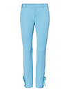

Sloan Skinny-Fit Floral Pant
$98.00
PRODUCT DETAILS
-The polished Sloan fit sits lower on the waist with a sleek, tailored leg to balance and slim the hips.
-Zip fly with hook-and-bar closure. Belt loops.
-Front coin pockets. Back welt pockets.
-Flat front. Trouser crease.
#267917
AVAILABLE STYLES: 